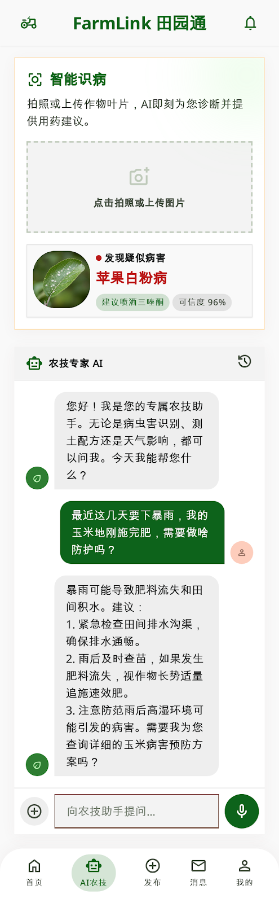
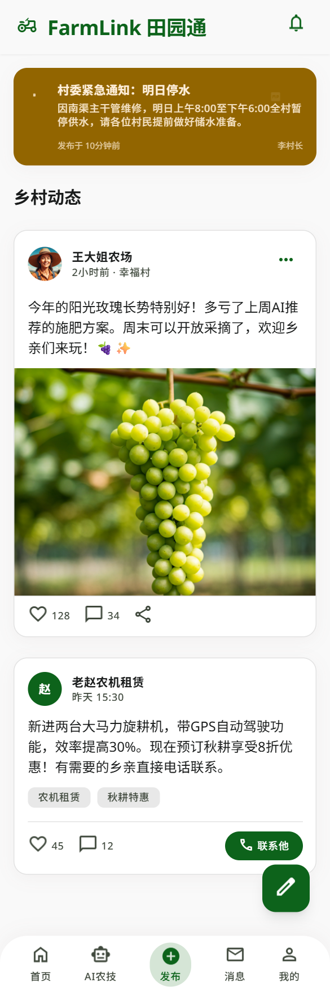
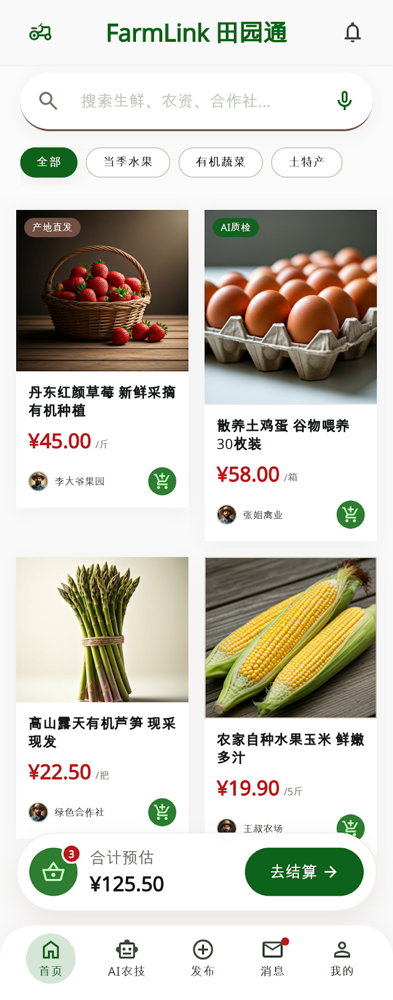
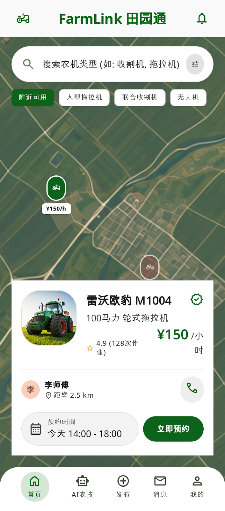

FARMLINK
在线 SaaS 数字乡村平台
FarmLink 田园通
让农业生产、农产品流通、农机共享、惠农政策与乡村生活服务运行在同一朵云上。
76功能模块
24AI 融合场景
8核心业务板块


AI

病害识别可信度
96%
AI 农业生产
从一张叶片照片，到一套处置建议
识别病虫害、理解天气影响、生成施肥和防护方案，农技服务随身响应。
上传图片
→
AI 识别
→
农事建议
MARKET
流通销售与农机共享
把供需、设备与服务连成一条实时链路
从农产品直供、AI 质检，到农机预约和作业协同，减少等待，让村镇资源更快流动。
农产品流通
行情、订单、质检一屏掌握
农机共享
预约、定位、作业成本清晰可见


今日交易估值￥125.50
附近可用农机18 台
AI 质检商品32 批
DATA
数据管理与平台治理
把乡村运行数据沉淀成可决策的看板
面向村委、经营主体与平台管理员，统一管理农情、订单、政策触达和服务状态。
服务覆盖板块
8
业务 API 模块
76
平台协同进度
FarmLink 田园通
一站式智能农业服务，让乡村振兴更高效抵达每一片田地
生产、经营、生活与治理协同在线，构建完整数字乡村解决方案。
开启智能农业云平台